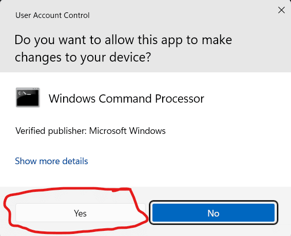

Download: Settings Optimiser Scripts
The Hackboto Tech Tips Settings Optimiser Script is really easy to use, just follow the instructions that you are provided with.
What Does the Script Do?
The Hackboto Tech Tips Settings Optimiser script is a free script that changes your Windows 10/ 11 settings, many of the settings changed are not accessible through the standard settings app, this is where the script comes into play as it disables unnecessary telemetry and data collection on your PC, the script will also disable non-essential system services that are made redundant as a result of the changes to your settings.
The script will disable things that are generally considered to be bloatware and adware on your PC, this script will remove things like Co-Pilot AI, Feed from Microsoft Edge browser, Windows spotlight, etc.
Downloading the scripts
You can download the scripts using the download button below, this should start the download process.
Download Settings_Optimiser.zipThe latest version is 1.2.9
The script is in two halves, read the "How do I use the script?" section to learn more.
Once you have downloaded the file, you should have a .zip folder, this folder should contain the System__Settings_Optimiser.bat and User_Settings_Optimiser.bat scripts, if you do not see these scripts, it is possible that there is a problem with the download, if this happens try downloading again.
How do I use the script?
The script is really simple and easy to use, the script has been split into two files called "System__Settings_Optimiser.bat" and "User_Settings_Optimiser.bat".
System_Settings_Optimiser.bat: This script makes important changes to your entire computer and the admin account used to run the script, if you have only one account on your computer then you will only need to use this script.
User_Settings_Optimiser.bat: This script makes changes to other user accounts on the computer that don't have admin rights, you will need to run this script on each user account that is on your computer system after you have run the System_Settings_Optimiser.bat.
Step 1: Run System__Settings_Optimiser
To Run the System_Settings_Optimiser you need to double click on it from within the folder mentioned in the previous section.
When running the System_Settings_Optimiser you might see this error, you need to click 'Run' to continue."

Sometimes the script will be blocked by the built-in antivirus, this is because the script was not created on your computer, if you see this error you will need to click on 'More info'.

After clicking on 'More info' you will need to click on 'Run anyway' to continue.
You will be asked to enter your Admin password at this stage, once you enter your password click yes. You might not need a password if you are using an Admin account to run the script.
By this stage the System_Settings_Optimiser should be running, you will be asked to read through the Terms and Conditions, enter 'Y' if you agree to the Terms and Conditions and would like to start the script, if you do not agree with the Terms and Conditions enter 'N' and the script will close, and no changes will be made to your computer.
Once the script has completed you will see a message telling you this, when you click OK, your computer will restart, and you can move onto step 2.
Step 2: Run User__Settings_Optimiser
This script does not require admin rights; therefore, you can run it on both standard and admin accounts. If you have many user accounts on your computer, you will need to run the script on each account.
To run the script, you need to repeat the steps in step 1, however you need to run the User_Settings_Optimiser.bat instead of the System_Settings_Optimiser.bat.
Page Updated: 16/02/2025
Page Author: Hackboto